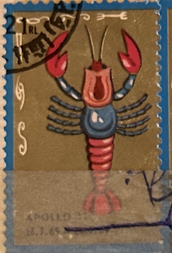
| SOURCE | TITLE| IMAGE MATCH | click to source page |
| Getty Images | Matchbook image of red lobster holding top hat and cane and wearing... News Photo - Getty Images | 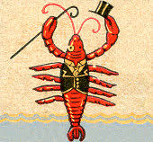 |
| The Week | How Wall Street and Endless Shrimp may have killed Red Lobster | The Week | 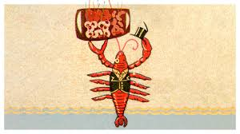 |
| eBay | Anthropomorphic Lobster Antique Postcard 1906 UDB | eBay | 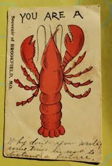 |
| Teen Vogue | Philanthropy - Latest | Teen Vogue | 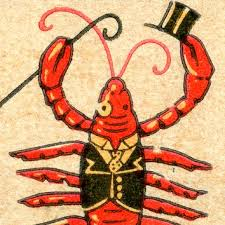 |
| Etsy | Louisiana Cajun Folk Art - Etsy | 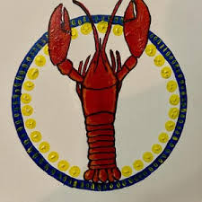 |
| eBay | Buy LOBSTER FLAG BLUE TRIM Hand Crafted 27 " by CBK #19084 online | eBay | 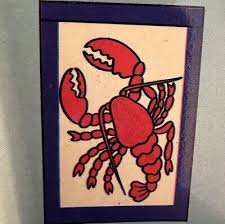 |
| Issuu | Issuu | 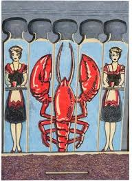 |
| Etsy | Charming Vintage Style Reverse Glass Painting From India Folk Naive Art Hand Painted Crayfish Lobster Recycled Hand Made Frame 12 X 17cm - Etsy | 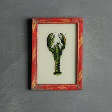 |
| oldsculpingallery.org | Brian Kirkpatrick — Old Sculpin Gallery/MVAA | 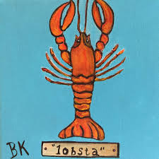 |
| Houzz | Tell me what I have here | 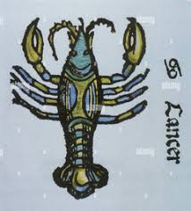 |
| Nikki Kendall (@nikki_kvip) • Instagram photos and videos | 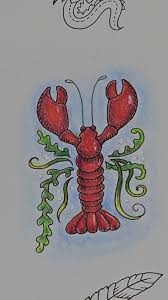 | |
| WorthPoint | BUNDLE OF ORIGINAL 1920'S/1930'S FORTNUM AND MASON ADVERTISING | #466762543 | 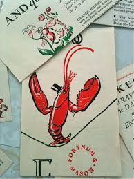 |
| Shutterstock | 57+ Thousand Crayfish Lobster Royalty-Free Images, Stock Photos & Pictures | Shutterstock | 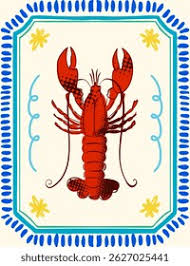 |
| Discover 130 FREE Public Domain Images and public domain images ideas on this Pinterest board | public domain, art, free illustration images and more | 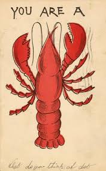 | |
| ArtPal | Strange and Unusual - She's Crafty 504 - Paintings & Prints, Entertainment, Movies, Cult Classics - ArtPal | 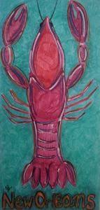 |
| CareUK Living | Artist Gifts Not Paint Water Painter Gifts Artist Vacuum Insulated 304 Paint Water Mug | 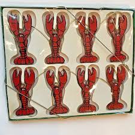 |
| Substack | 8 In the clearing, a crayfish - by Christine Leviczky Riek | 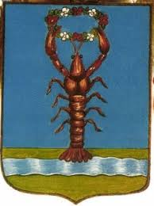 |
| Frugal Fashionistas | Victoria BC | 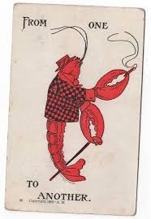 | |
| You are a lobster - West Poland, Maine (circa 1905) | 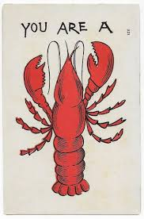 | |
| eBay | 1950s Old Original Bookbinder's Lobster Restaurant Walnut Street Philadelphia #1 | eBay | 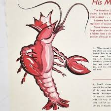 |
| eBay | CRAB + LOBSTER Vintage 1985 BEISTLE CO Honeycomb Tissue Paper Decorations | eBay | 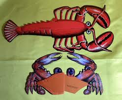 |
| eBay | LOBSTER--Red--Blue Star & White Stripes on Lobster--Counted Cross Stitch Pattern | eBay | 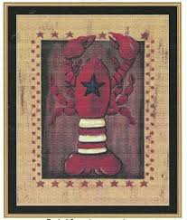 |
| Mouse Hug | 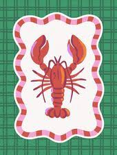 | |
| You never buy Xmas crayfish for your family, why???? | 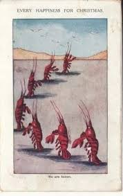 | |
| Vintage woman print by Francisco Ribera Gómez. Hard print - no glass 27.5cm x 34cm $75 (SOLD) | 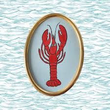 | |
| eBay | Vintage Lobster LEATHER Hand colored Post Card 1907 Seattle, Washington | eBay | 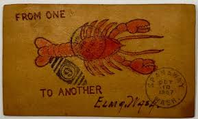 |
| eBay | From Your True Lobster 1900s Greetings Leather Postcard | eBay | 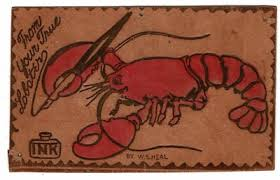 |
| eBay | Lobster & Please Join Us Rubber Mounted Stamp New! Stampabilities | eBay | 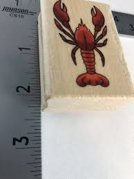 |
| sarahbguestperry.blog | Henri Meunier (1873-1922). Belgian. Art Nouveau. Illustrator and poster designer. – Toes in a Very Different Sand | 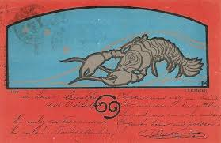 |
| Georgie King Designs | Coastal Art Prints – Georgie King Designs | 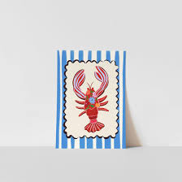 |
| The absolute best boy ever. Happy Heavenly Birthday. Love you forever... | 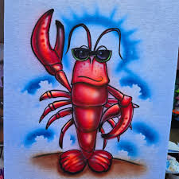 | |
| Louisiana Lottery | 1652 - Fleur De 3'S | Louisiana Lottery | 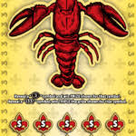 |
| eBay | 1905 COMIC GREETINGS POSTCARD, FROM ONE LOBSTER TO ANOTHER | eBay | 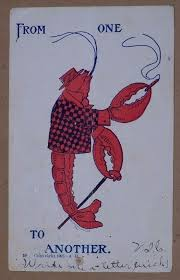 |
| Memphis magazine | A Rare Menu from Pappy & Jimmy's Lobster Shack - Memphis magazine | 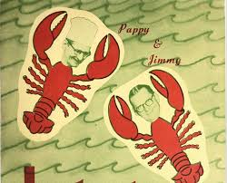 |
| Tumblr | I have tried for years to discover something, anything, about this card with no success. – @elodieunderglass on Tumblr | 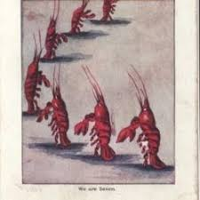 |
| Discover 280 Vintage engraved illustration and illustration ideas in 2026 | art inspiration, art, illustration art and more | 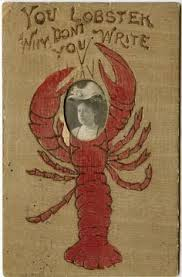 | |
| Faire | Wholesale Sardines Fridge Magnet for your store - Faire | 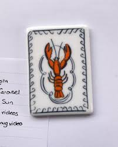 |
| Carrie Ellen Designs | Lobster ITH Key Fob Machine Embroidery Design | Crustacean Lover In-Th – Carrie Ellen Designs | 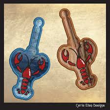 |
| Etsy | 4 Tile Decorative Wall Hanging Whimsical Southern Seafood Cuisine - Etsy Ireland | 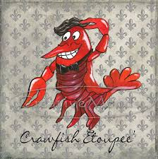 |
| My lord and savior, my rock-lobster . . . . #flash #lobster #jesus #jesuslovesyou #jesusquotes #crustaceans #crustaceannation #tattoo #tattooflash #lobstertattoo #crabtattoo | 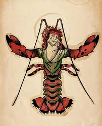 | |
| peaceloveandjoyce.com | Stampin' Up! Projects & Tutorials - Peace, Love and Joyce | 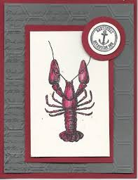 |
| The Art Group | Studio Dolci (Aragosta) Art Print | The Art Group | 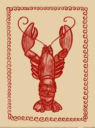 |
| eBay | EARLY HUMOR - POSTED POSTCARD - FROM ONE ........ TO ANOTHER | eBay | 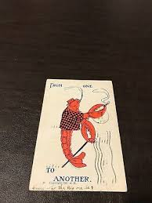 |
| Love the Print | Lobster Wall Art Set of 4 Prints Beautiful Vintage Antique Blue Red Se – Love the Print | 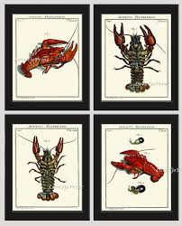 |
| Did-a-chick? : r/TheDarkTower | 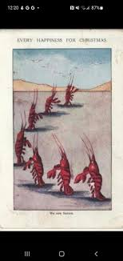 | |
| Art.com | Lobster - Woodblock Art Print - Lantern Press | Art.com | 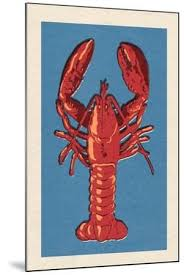 |
| Bridgeman Prints | Marine Life iPhone Case by Edward Alexander Wadsworth - Bridgeman Prints | 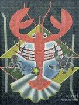 |
| 52 Wallpapers ideas | cute wallpapers, cute patterns wallpaper, iphone wallpaper | 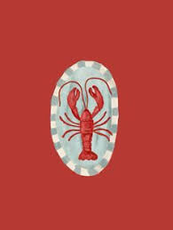 | |
| custom corn hole boards! 🌱🌻✨ | 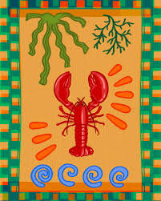 | |
| eBay | GENNADY PUGACHEVSKY: Exlibris für A. Veenhof-Sloots | eBay | |
| Neocities | Personal Encounters: Giant Shrimp In The Laundry Room | |
| WorthPoint | SCARCE! Huge Vintage Firecracker Pack Label "LOBSTER BRAND" (3"x17.5") 120s | #1781631066 | |
| Medieval Bestiary : Animals in the Middle Ages | Medieval Bestiary : Beasts : Crab | |
| Big EZ Artist | Cajun Alphabet - Y - Big EZ Artist | |
| Ju Curado (jucurado) - Profile | Pinterest | ||
| Bonzo-Art | Bonzo-Art Originals | |
| eBay | Anthropomorphic Lobster Postcard From One To Another Le Suer Minnesota MN 1908 | eBay | |
| Magwire Art | King Crawdaddy #2 — Magwire Art | |
| Etsy | New Orleans Crawfish Note Card - Etsy |